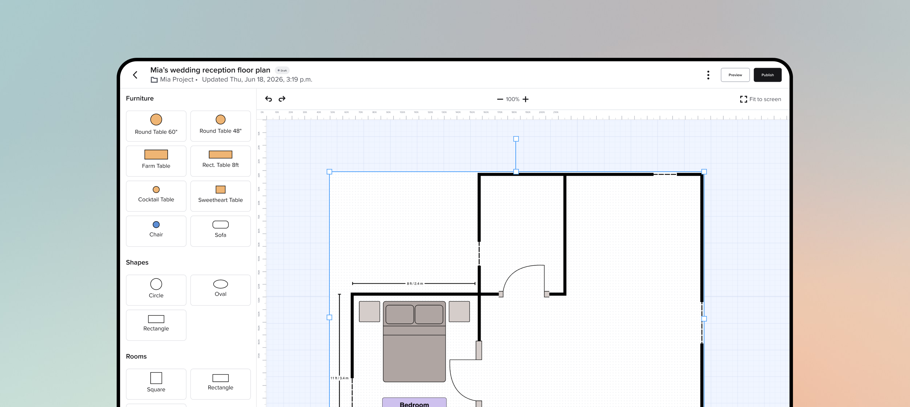
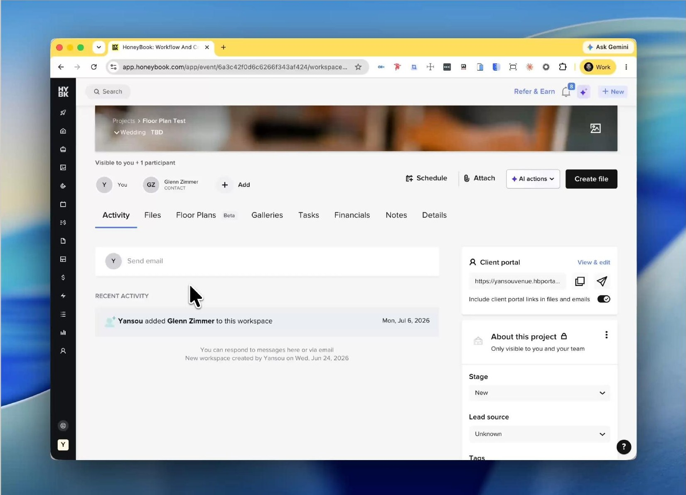
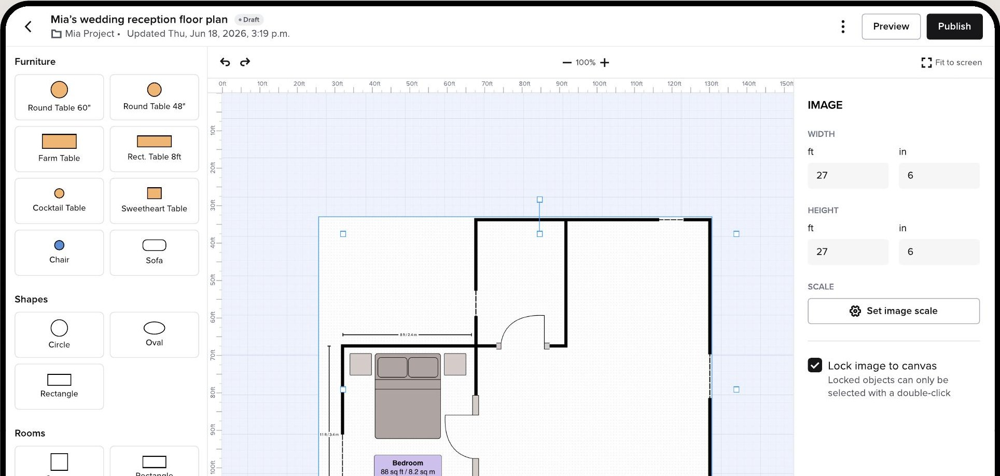
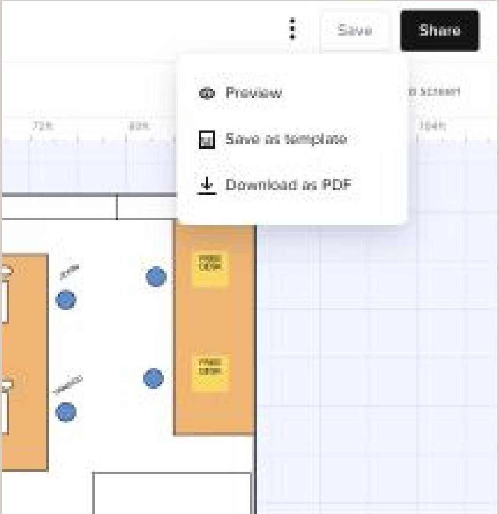
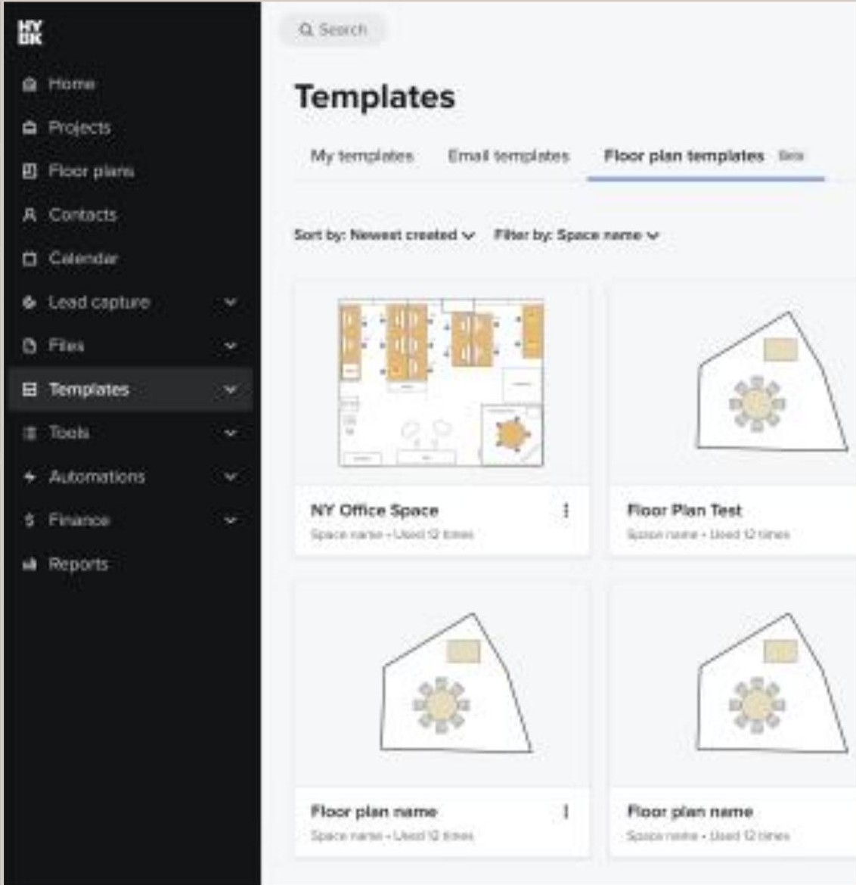
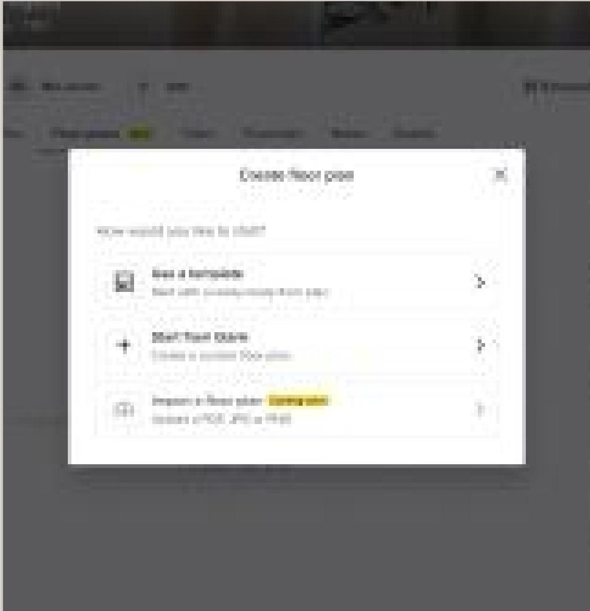
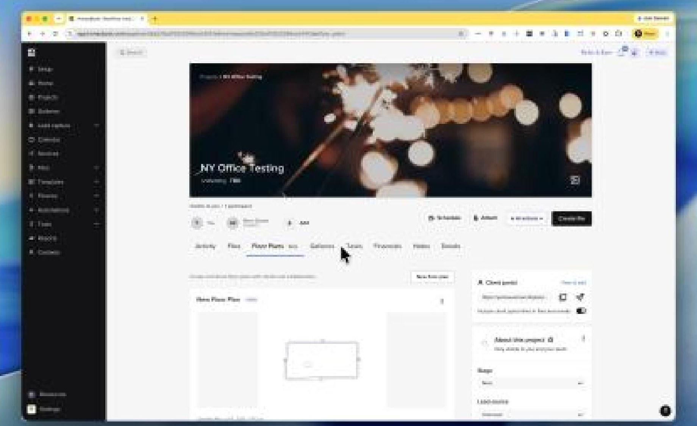

Floor plans
HoneyBook's first native floor planning tool, built for its highest-value vertical.

01The opportunity
Venues are one of HoneyBook's highest-revenue verticals — and the one most likely to need a floor plan for every event they book.
Without a native tool, they pieced it together across Canva, Prismm, and AllSeated. HoneyBook had the booking data, the client portal, and the relationship. It was missing the tool.
Venues were also the segment most at risk — Prismm and Social Tables were targeting them directly, and floor planning was the biggest gap in the platform. The objective: a native tool inside the HoneyBook project workflow, wired to CRM data competitors don't have.
02What I learned
13 tools benchmarked, the venue workflow mapped end to end, and early users interviewed.
- Version confusion was the biggest pain.Clients, coordinators, and staff each worked from a different PDF. Nobody knew which one was current.
- Venues think in two modes.Set a space up once, then adjust it per booking. Most tools ignored that distinction.
- HoneyBook already had the context.Guest counts, contracts, client relationships — everything a floor plan needs was already in the system.
“I would LOVE to see a floor plan feature that could be used on the platform successfully.”
Venue member · early research
03Designing V1
Before the builder, I mapped how floor plans would live inside a project: a three-status model separating prep from sharing, distinct views for venues and clients, and a create flow that leads with templates.

The floor plans tab. A dedicated space in every project. The empty state makes the first move obvious; each plan card carries its name, space, status, and thumbnail.
V1 was intentionally scoped as an MVP. We wanted it in front of real users fast — to learn how they actually built plans.

The V1 builder. A categorized element panel, an infinite canvas with a ruler, and image-scale calibration for real-world dimensions — shipped to 30% of venue members.
04We shipped it — then asked what was missing
V1 went to 30% of venue members on June 10. We asked for feedback right away; 11 members responded, and the signal was clear.
Templates and reuse, a clearer wall tool, and a way to lock elements in place rounded out the list.
05Turning feedback into product direction
I helped align Product, Engineering, and the venue team around what to ship first — and what would make the product genuinely competitive.
- Aligned on the MVP so we could launch and learn instead of guessing.
- Set the V2 priorities — scale, blueprint uploads, templates, precision — from the feedback, not opinion.
- Kept it native. Partnered through build and QA so it stayed part of the project workflow, not a bolt-on.
06V2
Three fronts, in priority order.
Templates
Build a room once, reuse it across every booking — the most requested feature from early users.

Save as template. One click to the account-level library.

Templates tab. Beside file and email templates.

Create from template. Start a new plan from an existing one.
Scale & dimensions
The number-one blocker. Now you upload the venue's real blueprint and set scale, canvas rulers track real measurements as you build, and live dimensions appear on any selected element — no more guessing whether a table is actually 60 inches.
Precision
A rebuilt wall tool — click, drag, click, with a segment ruler — plus a measure tool and a scale legend locked to the canvas.
07The result
One place for templates and saved plans, inside the project. No exports, no second subscription, one source of truth.

Floor Plans after V2. Templates and saved plans, live in the HoneyBook project.
Launched June 10 with no marketing — members found it themselves. Opened to every venue member on July 5. As of July 7, day 27:
- 1,019
- Floor plans created
- 746
- Unique creators
- 1.37
- Avg. plans per user
- 41
- Shares per day
Still watching: activation as the full rollout builds signal, share and publish rates across the full flow, and two messaging gaps — Prismm integration and plan eligibility.
Want to see how I got there?
Research, competitive analysis, explorations, member feedback, V2 thinking, and the decisions behind the final product.
Read the full case study →